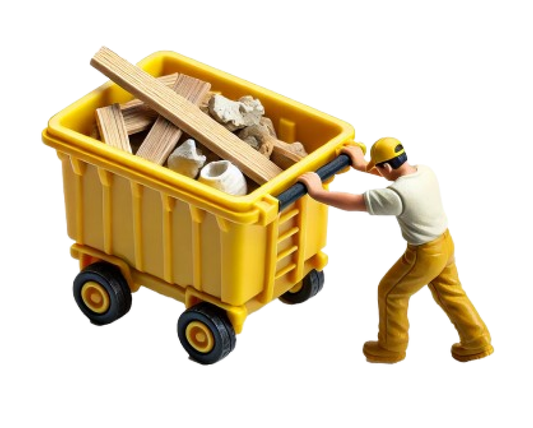
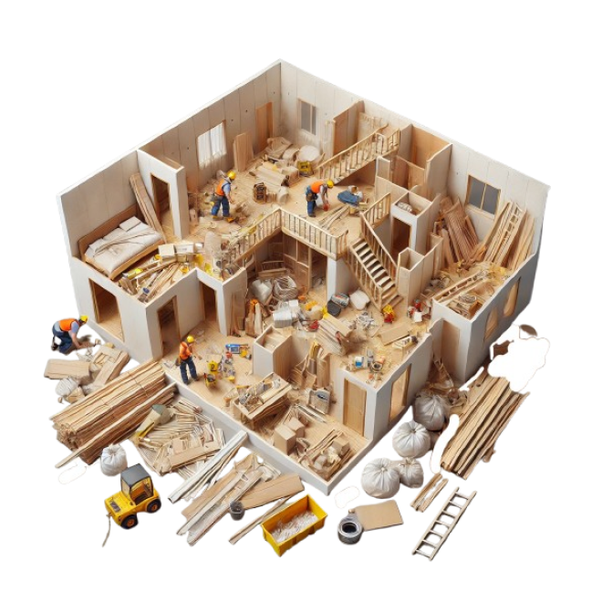
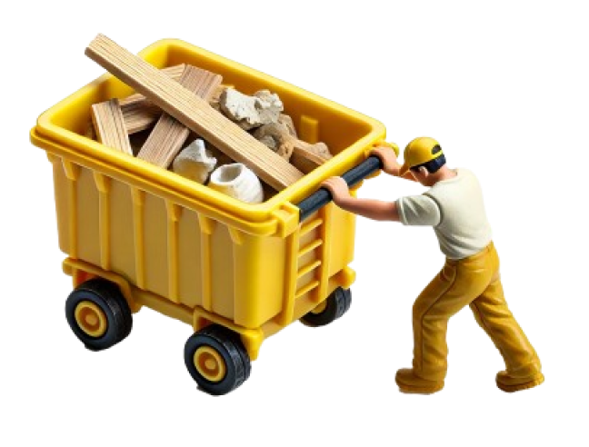
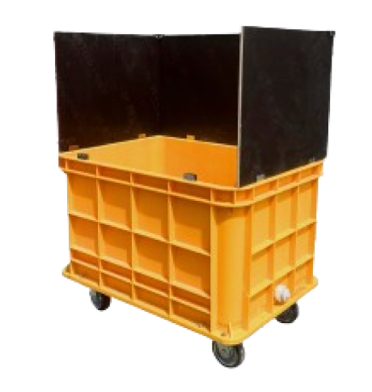
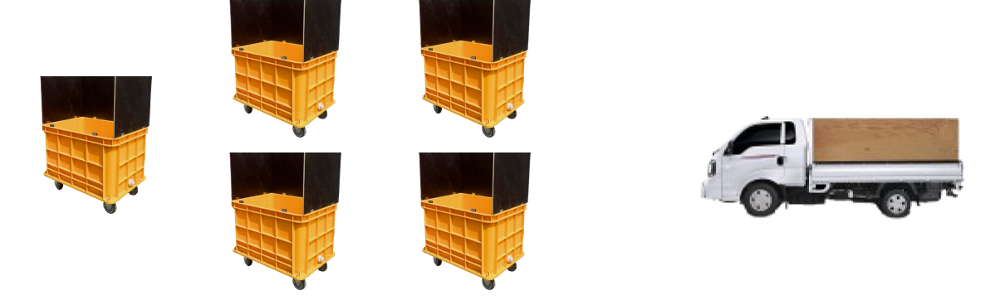
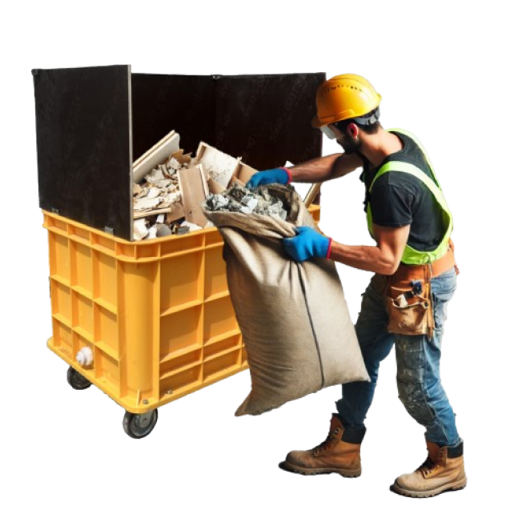

인테리어
폐기물 처리
번거롭고
힘드셨죠?


소형 이동식
폐기물 박스
수거반장은 소형 이동식 폐기물 박스를 통해인테리어 건축물 폐기물을 손쉽게 수집하고
운반해 드립니다.
현장에 박스를 바로 배치해 드리고,
폐기물이 가득 차면
반출 요청만 해 주세요.
저희가 폐기물 박스를 통째로 수거해
갑니다.
현장 상황에 맞게 편리하게 이용해
보세요!

항상
지저분 했던
현장
현장에 방치되는 폐기물들이 획기적으로줄어들어요. 청소를 따로 할 인력도 필요하지
않고 편하게 정리 할 수 있어서 너무 좋아요
현장이 넓어지고 깔끔해지는 만큼
작업 공간도 더 확보되어 작업자 분들의 능률도
엄청나게 향상되어요.

더이상
마대작업
NO!
폐기물반출, 현장을 깔끔히 유지하기 위해 했던마대 작업 부담이 없어졌어요.
반장님들께 매번 청소해달라고 말씀 드리기도
눈치 보였고 직접 하기에도 매번 너무 힘들고
사람을 쓰자니 인건비가 부담스럽고..
현장에서 에러 사항들이 한번에 해결됐어요.
편리하고
간편한 이동
이동식 박스는 현장에서정말 유용한 친구가 되어줄 거예요!
예전엔 폐기물을 마대에 쌓아두고, 이리저리 옮기느라
애먹었죠? 이제 그럴 필요 없어요.
이 박스만 있으면 작업할 때 간단히 옆으로 밀어두기만
하면 되거든요. 공간도 더 효율적으로 쓰고, 작업도 훨씬
수월해집니다.
작업할 때 작은 도움을 주는 이 친구, 한번 써보시면
작업환경이 얼마나 편해지는지 느끼실 거예요!

사이즈 및 용량
폐기물 1박스(사이즈: 1090mm x 790mm x 1420mm) 폐기물 1/2박스
(사이즈: 1090mm x 790mm X 640MM)


비용 안내
폐기물 1박스: 7만원(사이즈: 1090mm x 790mm x 1420mm)
폐기물 1/2박스: 4만원
(사이즈: 1090mm x 790mm X 640MM)
빈 박스를 배출할 경우, 금액은 폐기물 처리비가
아닌 임대료로 산정됩니다. 2,000원/1일.
1회 방문 시 최대 6개의 박스를 반입 및 반출할 수 있으며,
운반비는 1회 방문당 10,000원입니다.
반입일 기준으로 14일 이내에 수거 요청을 해주셔야 합니다.
운영 시간: 월금 08:00 ~ 17:00
모든 비용에는 부가세가 포함되어 있지 않습니다.
인테리어
폐기물
청소, 양중까지
필요하신가요?
인테리어 폐기물 마대작업 하고 치워줄 인력이필요하신가요?
1통당 2만원 서비스 비용 추가시
직접 박스를 가져가고 폐기물 직접 담고
배출까지 해드립니다.
품수에 의한 비용이 아닌 폐기물 양에 따라
합리적인 금액으로 이용해보세요.
*비움이 직접 폐기물 담고 수거 서비스 이용시
사전 최소 1일 전 예약은 필수입니다.
